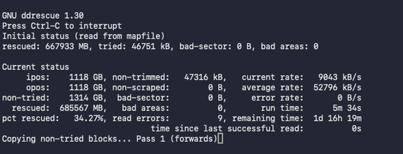

USB-Datenrettung unter Proxmox
Für eine beschädigte 2-TB-Festplatte habe ich eine Linux-Rettungsumgebung unter Proxmox eingerichtet. Sie sichert die Daten sektorweise auf verschlüsselten Speicher und setzt nach einer Unterbrechung an derselben Stelle fort.
Proxmox VE · SystemRescue · GNU ddrescue · LUKS2 · Bash
Projektdetails
Meine praktische Umsetzung
- Ausgangssituation analysiert, Rettungsablauf geplant und eine dedizierte Proxmox-VM mit SystemRescue 13.03 eingerichtet; die beschädigte USB-Festplatte per USB-Passthrough angebunden.
- Quelle und Ziel getrennt, Datenträgeridentität und verfügbaren Speicherplatz geprüft und das Quelllaufwerk per Linux-Schreibschutz gegen unbeabsichtigte Schreibzugriffe abgesichert.
- Einen separaten virtuellen Zielspeicher mit LUKS2-Verschlüsselung, LVM und ext4 eingerichtet und verwaltet. Image, Map-Datei und Protokolle bleiben dort persistent erhalten.
- GNU ddrescue 1.30 für das sektorweise Auslesen eingesetzt: zunächst ein schonender Lesedurchlauf ohne aggressive Wiederholungsversuche; unterbrochene Läufe mit derselben Map-Datei fortgesetzt.
- Das Linux-Rettungssystem konfiguriert, die Rettung über SSH und tmux über mehrere Betriebstage überwacht, Laufwerksverhalten und Lesefehler analysiert und den Ablauf technisch dokumentiert.
- Einen interaktiven Bash-Workflow mit KI-Unterstützung erstellt und angewendet: Abhängigkeitsprüfung, Geräteauswahl, Bestätigungen, Entsperren des Ziels, Speicherplatzkontrolle und automatische Fehlerprotokollierung.
- Einen ergänzenden systemd-Dienst eingerichtet, der beim Herunterfahren einen kontrollierten ddrescue-Abbruch und die Synchronisation anstoßen soll. Die vollständige USV-Abschaltkette unter Rettungslast ist noch nicht abschließend getestet.
Umsetzung: Eine separate Linux-VM liest die beschädigte Festplatte mit GNU ddrescue sektorweise in eine Abbilddatei, statt am Original zu reparieren. Die Map-Datei hält fest, welche Bereiche schon gelesen wurden. So lässt sich der Lauf nach einer Unterbrechung fortsetzen.
Stand: Die Sektorsicherung wurde mehrfach fortgesetzt und war zum dokumentierten Stand noch nicht abgeschlossen. Bereits gelesene Sektoren bedeuten nicht, dass die enthaltenen Dateien vollständig oder intakt sind.
Technik im Detail: Proxmox VE · dedizierte VM · SystemRescue 13.03 · USB-Passthrough · virtueller Zielspeicher · GNU ddrescue 1.30 · Linux-Schreibschutz · Image und Map-Datei · LUKS2 · LVM · ext4 · Linux · Bash · SSH · tmux · systemd
Nächste Schritte: Als Nächstes stehen die weitere Bearbeitung lesbarer Sektoren, die Dateirekonstruktion auf einer Kopie und die Integritätsprüfung an. Vertiefen möchte ich insbesondere die Bewertung von Laufwerksfehlern und einen kontrollierten End-to-End-Test der USV-, Host- und Gast-Abschaltkette.